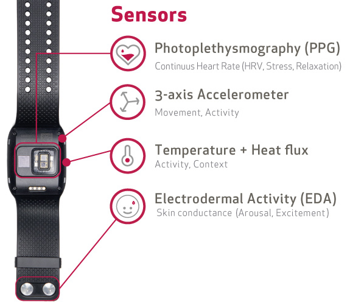
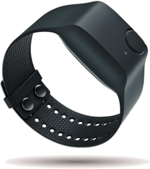
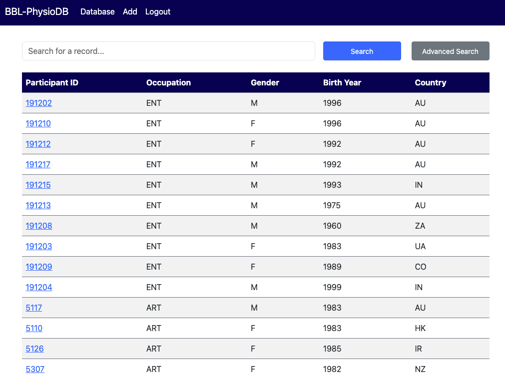

Imran Ture
Selected projects in data analytics, machine learning, and software development
Deep Emotion Recognition using Wearable Sensors
Emotion recognition is an emerging interdisciplinary field that integrates methodologies from affective computing, sentiment analysis, signal processing, and machine learning. This project focuses on classifying emotions such as amusement and stress using physiological signals like heart rate and skin conductivity, collected via wearables. To build the model, a hybrid approach was employed that combines various deep learning architectures, including Convolutional Neural Networks (CNN) and Long Short-Term Memory (LSTM) networks. This approach is capable of accurately capturing changes in physiological signals to identify specific emotional states.


The performance of the model has been rigorously evaluated using a variety of metrics, including accuracy, precision, recall, and F1-score. To fine-tune the model's performance, hyperparameter tuning was conducted using grid search and Bayesian optimization techniques. The model achieved an accuracy rate of 92% under a 5-fold cross-validation setting. As wearable technology continues to evolve, this project serves as a significant contribution to the development of real-time affective computing systems that could be integrated into future generations of a wide range of wearable products, from smartwatches to health monitors.
E4 TimeStamper: A GUI application for automatic timestamping and analysis of physiological signals collected from Empatica E4 wristbands
E4 TimeStamper is a user-friendly GUI application designed to facilitate researchers in adding timestamps to physiological signal data obtained from Empatica E4 wristbands. This tool allows for seamless extraction and precise timestamping of files, all in accordance with the chosen timezone and preferred date & time format. Developed in line with guidelines from Empatica, E4 TimeStamper is readily available for both Windows and Mac operating systems.


Image source
Python Implementation of OpenIntro Statistics Labs
We developed Python version of the statistical labs for OpenIntro Statistics, an open-source textbook for introductory statistics used at many universites (including the Ivy League) around the world. These labs are officially avaiable on the OpenIntro Statistics website.

|
BBL-PhysioDB: Data Hub for Entrepreneurial Research
BBL-PhysioDB serves as a repository for entrepreneurial research, encompassing studies conducted at RMIT's Behavioural Business Lab (BBL) in 2019. Developed using Django and PostgreSQL, this database can effectively manage data collected from over 150 participants, including entrepreneurs, artists, and professionals with diverse backgrounds. It has the capability to store extensive data collected through multiple lab experiment sessions, including physiological signal data recorded through E4 wristbands from Empatica, along with 200+ questionnaire responses providing demographic information and insights into participants' entrepreneurial engagement.

The database offers a user-friendly interface that simplifies navigation and enables robust search capabilities. Researchers can seamlessly query the database to explore findings from BBL studies. The database scheme can be leveraged by other researchers to address their own research needs.
Advancing Water Safety: An Early Warning System to Monitor and Evaluate Drinking Water Quality
An early warning system was developed that can enhance the safety and quality of drinking water in Turkiye by identifying hazardous contaminants such as E. coli O157:H7, anthrax, and ricin. Utilizing a hybrid approach that integrates various statistical methods like Z-score analysis, moving averages, control charts, and weighted voting, the system was designed to provide real-time monitoring and detect unexpected levels of multiple parameters, including temperature, pH, total organic carbon, conductivity, oxidation-reduction potential, free chlorine, and dissolved oxygen. The multi-tiered approach allows for early intervention for minor deviations and immediate action for more severe anomalies. It has the potential for wide-ranging applications, not just limited to municipal water treatment plants but also extending to main storage and distribution lines, thereby serving as a critical tool with the capability to safeguard public health and environmental integrity.

DurCalc : Hassle-Free Calculation of Date and Time Durations
DurCalc is an app designed to effortlessly calculate the duration between dates and/or times. With its user-friendly interface and intuitive functionality, DurCalc streamlines the process and calculates durations without any fuss.

For more information, please contact by email.